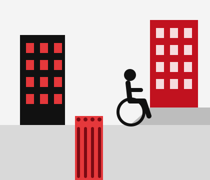

Acessibilidade é o que faz a cidade funcionar para todo mundo
Calçadas, ônibus, sites, salas de aula e escritórios: textos curtos e diretos sobre como a acessibilidade aparece, ou falta, nos lugares por onde passamos todos os dias.

Quem precisa de acessibilidade?
A resposta curta é: todo mundo, em algum momento. Uma pessoa idosa, alguém com o braço engessado, uma mãe empurrando um carrinho de bebê ou um turista que não fala a língua local se beneficiam das mesmas soluções pensadas para pessoas com deficiência. Ainda assim, os números mostram que esse público é grande por si só.
- pessoas com deficiência no Brasil
- 14,4 milhões
- da população com 2 anos ou mais
- 7,3%
- lei que garante a inclusão (LBI)
- Lei 13.146
Fonte: IBGE, Censo Demográfico 2022, divulgado em maio de 2025; Lei Brasileira de Inclusão, de 2015.
Escolha um tema
Mobilidade
Calçadas, piso tátil, transporte público e o caminho entre a casa e o destino.
Acessibilidade digital
Sites, aplicativos e o que muda quando alguém usa leitor de tela ou só o teclado.
Comunicação
Libras, legendas, braille, audiodescrição e linguagem simples.
Educação e trabalho
Escola inclusiva, adaptações razoáveis e a Lei de Cotas nas empresas.
Direitos e leis
O que a legislação brasileira garante e onde buscar ajuda.
Sobre e contato
Como este site foi feito, atalhos de teclado e formulário para relatar problemas.